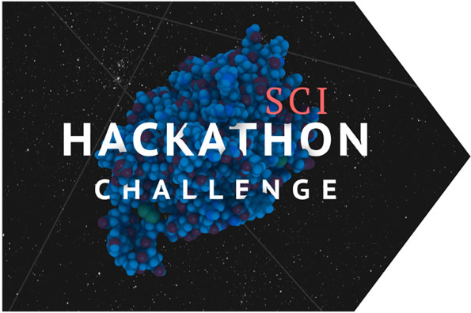
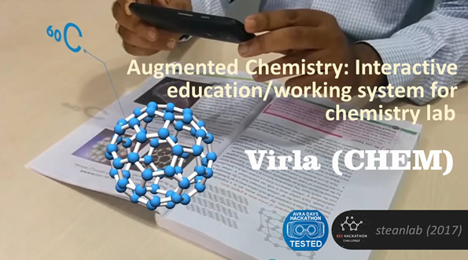
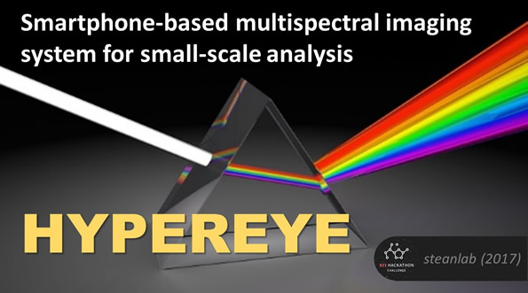
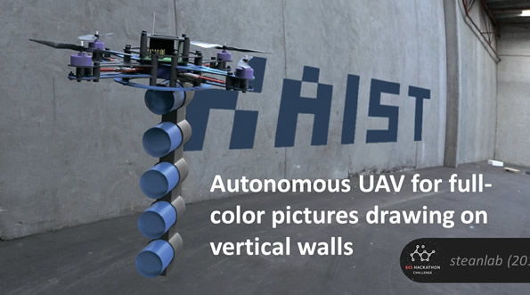
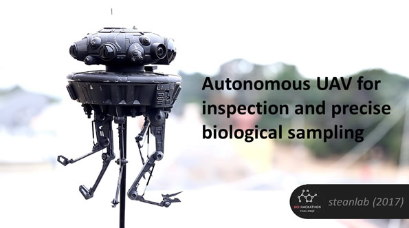
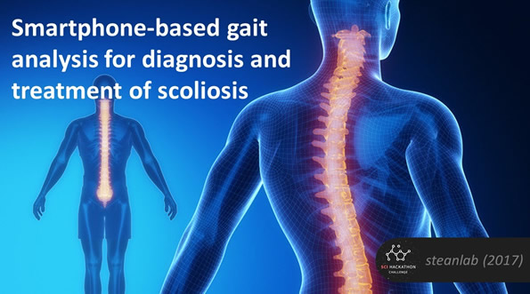
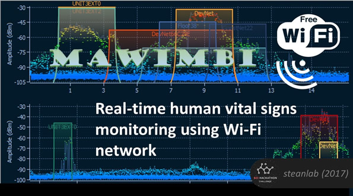
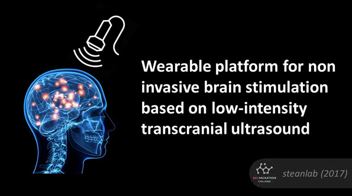
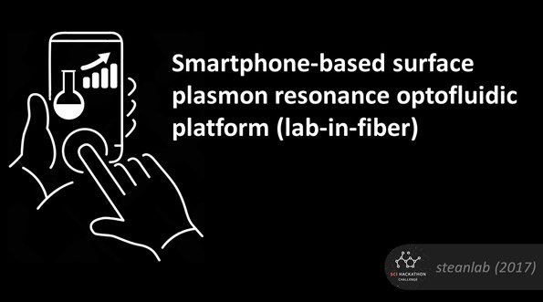
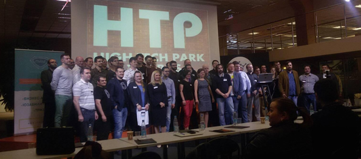

SciHackathon 2017 (Minsk, 2-4 June) (Projects/Tasks in English)
The organizers team invites individuals and companies, engaged in scientific, research, innovative and production activity to take part in scientific hackathon!
AREA: Augmented/Virtual Reality for education/science

AREA: Spectral imaging and microscopy. Visualization and Analysis of Spectral Data. Remote sensing.

AREA: Autonomous UAVs


AREA: Remote patient monitoring. Non-contact physiological (vital sign) and health data monitoring

AREA: Remote patient monitoring. Non-contact physiological (vital sign) and health data monitoring

AREA: Brain–computer interfaces. Bio/neurofeedback. Cognitive Engineering and Neuroergonomics. Noninvasive neuroscience research

AREA: Miniaturized systems for biomedical and environmental applications. Point-of-Care. Micro- and Nanofluidics. Lab-on-a-chip. Paper-Based Analytical Devices (μPADs)

SciHackathon-2017 Winners!
Semi-final
- Plasmona is a mobile SPR spectrometer that allows you to quickly analyze the content of synthetic drugs in the human body.
- Mimica is an app for the rehabilitation of patients with facial paralysis.
- PsychoPharmaGen is a service that helps to choose the right treatment for mental illness, taking into account the patient's genetic data.
- Throw it Now! - medical technology that is able to provide estimates of the risk of lung cancer in smokers.
- Equidus is a balance trainer, which, with the help of a smartphone, tells the user how to do this or that exercise correctly.
- A substance quality analyzer is a sensor capable of determining the degree of readiness of processes taking place in a liquid medium.
- HyperEye is a hyperspectral or multispectral imaging project for a mobile phone.
- Neurotracker is a mobile encephalograph device for recording the electrical activity of the brain.
- Hanami is a project to improve root crop breeding, which can determine the consumer and useful properties of plants by cutting them.
- AutoGene is an apparatus for the synthesis of artificial genes. The development helps in the treatment of diseases associated with heredity, and is also used in the creation of new drugs.
- Docsters is a program that helps categorize people by metabolic type and personalize drug dosage.
Winners
1st Prize - Plasmona
2nd Prize -
Mimica
3rd Prize -
PsychoPharmaGen
People's Choice Award - Throw it Now!

RETURN TO MAIN |